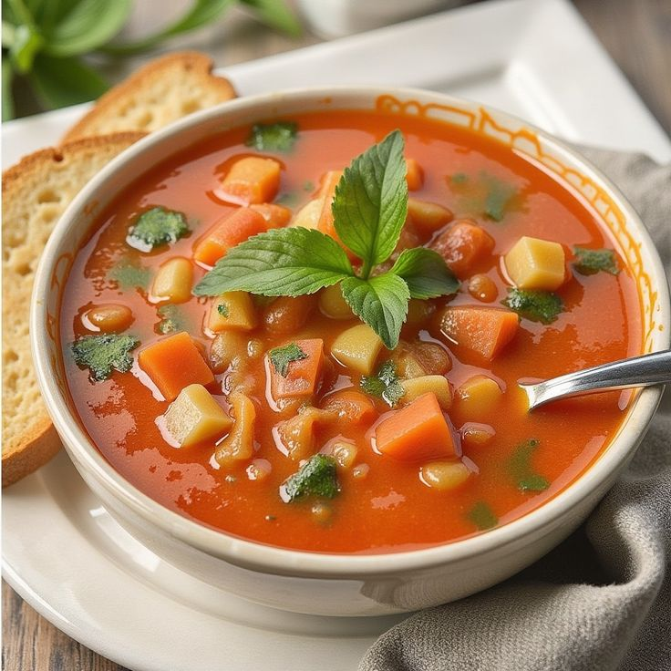

Gazpacho Andaluz

Ingredientes:
- 2 tomates medianos maduros (unos 250 g)
- 1/4 de pepino (pelado si quieres que sea más suave)
- 1/4 de pimiento verde (tipo italiano)
- 1/8 de cebolla (muy poquita, que no mate el resto)
- 1/2 diente de ajo pequeño (sin el germen para que no repita)
- 2 cucharadas de aceite de oliva virgen extra
- 1 cucharada de vinagre de vino blanco o de Jerez (ajusta a gusto)
- Sal al gusto (aprox. 1/4 de cucharadita)
- Un chorrito de agua fría (50-100 ml, según la textura que quieras)
- 1 trocito pequeño de pan del día anterior (sin corteza, remojado en agua) — para espesar y dar más cuerpo
Preparación:
- Lava y trocea los tomates, el pepino, el pimiento y la cebolla. Pela el ajo y quítale el germen.
- Si usas pan, remójalo en un poco de agua.
- En el vaso de la batidora o licuadora, añade: las verduras, el pan remojado (si lo usas), el aceite, el vinagre y la sal.
- Tritura todo bien hasta obtener una crema fina y homogénea. Añade el agua fría poco a poco hasta conseguir la textura que prefieras (más líquida o más espesa).
- Cuela el gazpacho con un colador fino si quieres una textura más fina (opcional, pero recomendable).
- Guarda en la nevera al menos 30 minutos para que esté bien frío. El sabor mejora mucho con el reposo.
- Sirve bien fresquito, solo o con trocitos de verdura (pepino, tomate, cebolla, pimiento) como topping, o con unos picatostes de pan.